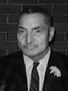

fiche familiale
*******************************************************************************
Alfred-Napoléon Perreault
décède à l'âge de 79 ans
Naissance: 9 avril 1867 à Ste-Anne-de-la-Pérade, cté Champlain
Décès: 14 déc 1946 à Rouyn-Noranda, cté Témiscamingue
Père: Anastasie Perreault
Mère: Henriette Tessier
Mariage: 28 nov 1889 à Manchester, NH, USA
Épouse: Délima Gosselin
Naissance: 15 avril 1871
*******************************************************************************
Enfant 1 Laura Perreault
Naissance: 29 déc 1890 à Manchester, NH, USA
Mariage le 28 jul 1913 à St-Joseph de Notre-Dame-du-Nord
Conjoint: Joseph Gauthier
-------------------------------------------------------------------------------
|   |
Enfant 2 Bruno Perreault décède à l'âge de 82 ans. Naissance le 16 sep 1892 à Gracevalley, Portland, OR, USA Décès le 27 fév 1975 à St-Lambert de Montréal (ses ancêtres) Mariage le 1 aoû 1916 à St-Isidore de Laverlochère Conjointe: Émilienne Rivest Rivet n. 20 jul 1897 d. 12 sep 1993 (sa famille) |
Enfant 3 Edith-Ida Perreault
décède à l'âge de 80 ans
Naissance: 19 sep 1893 à Gracevalley, Portland, OR, USA
Décès: 1 avril 1974 à Rouyn-Noranda, cté Témiscamingue
Mariage le 15 avr 1912 à St-Joseph de Notre-Dame-du-Nord
Conjoint: Eugène Lemire
-------------------------------------------------------------------------------
Enfant 4 Ellen-Alrline Perreault
Naissance: en oct 1895 à Gracevalley, Portland, OR, USA
-------------------------------------------------------------------------------
Enfant 5 Théophile Perreault
décède à l'âge de 75 ans
Naissance: 15 avr 1898 à Gracevalley, Portland, OR, USA
Décès: 14 jul 1973 à Rouyn-Noranda, cté Témiscamingue
Mariage le 9 juin 1921 à St-Joseph de Notre-Dame-du-Nord
Conjointe: Alexina Boucher
-------------------------------------------------------------------------------
Enfant 6 Wilfrid Perreault
décède à l'âge de 75 ans
Naissance: en jul 1899 à Gracevalley, Portland, OR, USA
Décès: 7 mar 1975 à Laverlochère, cté Témiscamingue
Mariage le 16 jun 1926 à Timmins, cté Cochrane, ON.
Conjointe: Annette Roy
-------------------------------------------------------------------------------
Enfant 7 Henri Perreault
Naissance: vers 1905
Mariage le 30 avril 1930 à St-Michel-Archange de Rouyn-Noranda
Conjointe: Rose Boissonneault
-------------------------------------------------------------------------------
| Début de la page | Page précédente | Page des ancêtres | Page d'accueil |